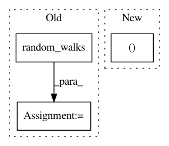

7fe99a818f297f195ff6000d4a6ffecc6e7db774,tslearn/docs/examples/metrics/plot_dtw.py,,,#,32
Before Change
numpy.random.seed(0)
n_ts, sz, d = 2, 100, 1
dataset = random_walks(n_ts=n_ts, sz=sz, d=d)
scaler = TimeSeriesScalerMeanVariance(mu=0., std=1.) // Rescale time series
dataset_scaled = scaler.fit_transform(dataset)
path, sim = metrics.dtw_path(dataset_scaled[0], dataset_scaled[1])
After Change
-0.815, -0.823, -0.821])
s_y1 = numpy.concatenate((s_x, s_x)).reshape((-1, 1))
s_y2 = numpy.concatenate((s_x, s_x[::-1])).reshape((-1, 1))
sz = s_y1.shape[0]
path, sim = metrics.dtw_path(s_y1, s_y2)
In pattern: SUPERPATTERN
Frequency: 3
Non-data size: 3
Instances
Project Name: rtavenar/tslearn
Commit Name: 7fe99a818f297f195ff6000d4a6ffecc6e7db774
Time: 2020-04-28
Author: romain.tavenard@univ-rennes2.fr
File Name: tslearn/docs/examples/metrics/plot_dtw.py
Class Name:
Method Name:
Project Name: rtavenar/tslearn
Commit Name: d7f439d3d896dddea4638d4f036f9f71d095e34a
Time: 2019-07-24
Author: givdwiel.vandewiele@ugent.be
File Name: tslearn/tests/sklearn_patches.py
Class Name:
Method Name: check_supervised_y_2d
Project Name: rtavenar/tslearn
Commit Name: d2220dac28daf1b0d3cd17e9ce069f9c4644fcdd
Time: 2019-07-28
Author: givdwiel.vandewiele@ugent.be
File Name: tslearn/tests/sklearn_patches.py
Class Name:
Method Name: check_fit_idempotent